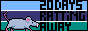
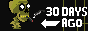
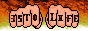
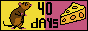
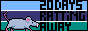
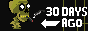
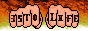
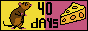

guites' official Lung-o-dar 🫁
This is a very anxious page where I track my life as a non smoker. There are skulls 💀 on days I've had a cigarette, and a sticker 🚭 on the ones I haven't.
You can put your mouse on the recorded days to get a glimpse of how I was feeling that particular moment.
My last day as a smoker was 28/07/2024. Every cigarette from there on can be seen as a misstep =P.
Let's fucking go!
2024
amidst the haze
| July | ||||||
|---|---|---|---|---|---|---|
| Mon | Tue | Wed | Thu | Fri | Sat | Sun |
| 1 | 2 | 3 | 4 | 5 | 6 | 7 |
| 8 | 9 | 10 | 11 | 12 | 13 | 14 |
| 15 | 16 | 17 | 18 | 19 | 20 | 21 |
| 22 | 23 | 24 | 25 | 26 | 27 | 28💀 |
| 29🚭 | 30🚭 | 31🚭 | ||||
| August | ||||||
|---|---|---|---|---|---|---|
| Mon | Tue | Wed | Thu | Fri | Sat | Sun |
| 1🚭 | 2🚭 | 3🚭 | 4🚭 | |||
| 5🚭 | 6🚭 | 7🚭 | 8🚭 | 9🚭 | 10🚭 | 11🚭 |
| 12🚭 | 13🚭 | 14🚭 | 15🚭 | 16🚭 | 17🚭 | 18🚭 |
| 19🚭 | 20🚭 | 21🚭 | 22🚭 | 23🚭 | 24🚭 | 25🚭 |
| 26🚭 | 27🚭 | 28🚭 | 29🚭 | 30🚭 | 31🚭 | |
| September | ||||||
|---|---|---|---|---|---|---|
| Mon | Tue | Wed | Thu | Fri | Sat | Sun |
| 1🚭 | ||||||
| 2🚭 | 3🚭 | 4🚭 | 5🚭 | 6🚭 | 7🚭 | 8🚭 |
| 9🚭 | 10🚭 | 11🚭 | 12🚭 | 13🚭 | 14🚭 | 15🚭 |
| 16🚭 | 17🚭 | 18🚭 | 19🚭 | 20🚭 | 21🚭 | 22🚭 |
| 23🚭 | 24🚭 | 25🚭 | 26🚭 | 27🚭 | 28🚭 | 29🚭 |
| 30🚭 | ||||||
| October | ||||||
|---|---|---|---|---|---|---|
| Mon | Tue | Wed | Thu | Fri | Sat | Sun |
| 1🚭 | 2🚭 | 3🚭 | 4🚭 | 5🚭 | 6🚭 | |
| 7🚭 | 8🚭 | 9🚭 | 10🚭 | 11🚭 | 12🚭 | 13🚭 |
| 14🚭 | 15🚭 | 16🚭 | 17🚭 | 18🚭 | 19🚭 | 20🚭 |
| 21🚭 | 22🚭 | 23🚭 | 24🚭 | 25🚭 | 26🚭 | 27🚭 |
| 28🚭 | 29🚭 | 30🚭 | 31🚭 | |||
| November | ||||||
|---|---|---|---|---|---|---|
| Mon | Tue | Wed | Thu | Fri | Sat | Sun |
| 1🚭 | 2🚭 | 3🚭 | ||||
| 4🚭 | 5 | 6 | 7 | 8 | 9 | 10 |
| 11 | 12 | 13 | 14 | 15 | 16 | 17 |
| 18 | 19 | 20 | 21 | 22 | 23 | 24 |
| 25 | 26 | 27 | 28 | 29 | 30 | |
Streak
Not smoking for 99 consecutive days!
 






